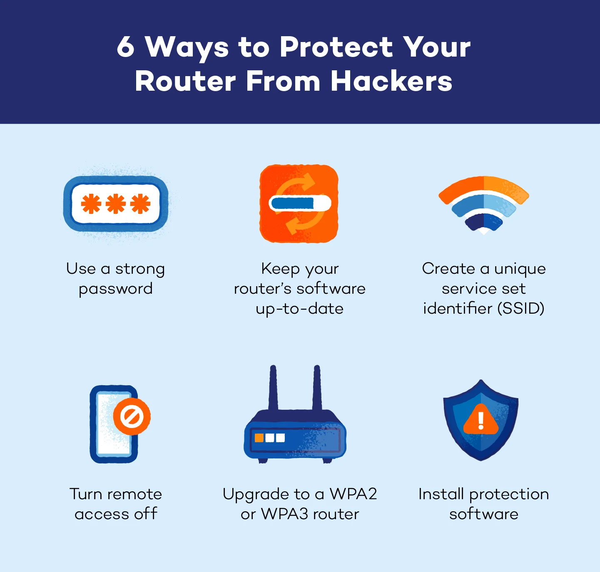

Here are some steps you can take to secure your home router (Panda Security, 2025)
Your router connects your devices to the internet, so securing both the router and the devices on your network is important. These steps can make it harder for someone to access your information or misuse your connection.
This infographic from Panda Security highlights router-specific protections – use a strong password and a unique Wi-Fi network name (SSID), keep the router software up to date, use WPA2 or WPA3 security, turn off remote access when it is not needed, and install protection software.
“In security testing, Lewis said he’s been able to breach a system and take control of a person’s laptop camera without their knowledge ‘And it doesn’t even always trip the light that shows the camera is live,’ he added.” (Wright, 2016)
“Unsurprisingly to many, women tend to be targets for this kind of hacking. ‘Women on the internet get a lot of attention. Some of it good, a lot of it’s bad,’ said Sauter.” (Wright, 2016)
This infographic from Panda Security shows ten warning signs that could indicate a problem with your router or network:
Signs someone has hacked your router (Panda Security, 2025)
These signs do not prove that a router has been hacked, but unexpected changes are worth investigating. Check your router’s settings and contact your internet provider if you are unsure what to do.